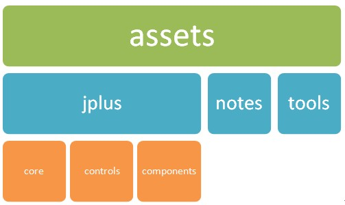

项目文件夹结构
确保您已阅读 《系统构架》 。

- assets: 项目内部使用的资源文件。
- assets/libs: 第三方Javascript框架。
- assets/project: 和项目状态有关的进度文件。
- assets/scripts: 内部使用的 Javascript 文件。
- assets/styles: 内部使用的 Css 文件。
-
test: 全部核心模块和常用代码模块的测试页面。
- src: 项目源码。
- resources: 项目的文档资源文件，一般只是内部临时存储，比如一些临时的 txt 文件等。
继续阅读《Javascript 编码规范》>>